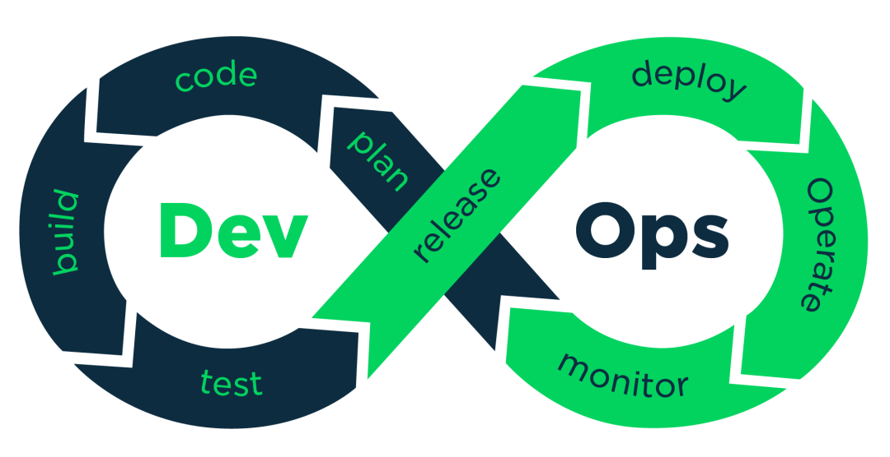

devops

DevOps（Development和Operations的组合词）是一组过程、方法与系统的统称，用于促进开发（应用程序/软件工程）、技术运营和质量保障（QA）部门之间的沟通、协作与整合。
它是一种重视“软件开发人员（Dev）”和“IT运维技术人员（Ops）”之间沟通合作的文化、运动或惯例。透过自动化“软件交付”和“架构变更”的流程，来使得构建、测试、发布软件能够更加地快捷、频繁和可靠。
它的出现是由于软件行业日益清晰地认识到：为了按时交付软件产品和服务，开发和运维工作必须紧密合作。
持续开发:
这是DevOps生命周期中软件不断开发的阶段。与瀑布模型不同的是，软件可交付成果被分解为短开发周期的多个任务节点，在很短的时间内开发并交付。
这个阶段包括编码和构建阶段，并使用Git和SVN等工具来维护不同版本的代码，以及Ant、Maven、Gradle等工具来构建/打包代码到可执行文件中，这些文件可以转发给自动化测试系统进行测试。
持续测试：
在这个阶段，开发的软件将被持续地测试bug。对于持续测试，使用自动化测试工具，如Selenium、TestNG、JUnit等。这些工具允许质量管理系统完全并行地测试多个代码库，以确保功能中没有缺陷。在这个阶段，使用Docker容器实时模拟“测试环境”也是首选。一旦代码测试通过，它就会不断地与现有代码集成。
持续集成:
这是支持新功能的代码与现有代码集成的阶段。由于软件在不断地开发，更新后的代码需要不断地集成，并顺利地与系统集成，以反映对最终用户的需求更改。更改后的代码，还应该确保运行时环境中没有错误，允许我们测试更改并检查它如何与其他更改发生反应。
Jenkins是一个非常流行的用于持续集成的工具。使用Jenkins，可以从git存储库提取最新的代码修订，并生成一个构建，最终可以部署到测试或生产服务器。可以将其设置为在git存储库中发生更改时自动触发新构建，也可以在单击按钮时手动触发。
持续部署：
它是将代码部署到生产环境的阶段。 在这里，我们确保在所有服务器上正确部署代码。 如果添加了任何功能或引入了新功能，那么应该准备好迎接更多的网站流量。 因此，系统运维人员还有责任扩展服务器以容纳更多用户。
由于新代码是连续部署的，因此配置管理工具可以快速，频繁地执行任务。 Puppet，Chef，SaltStack和Ansible是这个阶段使用的一些流行工具。
容器化工具在部署阶段也发挥着重要作用。 Docker和Vagrant是流行的工具，有助于在开发，测试，登台和生产环境中实现一致性。 除此之外，它们还有助于轻松扩展和缩小实例。
持续监控：
这是DevOps生命周期中非常关键的阶段，旨在通过监控软件的性能来提高软件的质量。这种做法涉及运营团队的参与，他们将监视用户活动中的错误/系统的任何不正当行为。这也可以通过使用专用监控工具来实现，该工具将持续监控应用程序性能并突出问题。
使用的一些流行工具是Splunk，ELK Stack，Nagios，NewRelic和Sensu。这些工具可帮助密切监视应用程序和服务器，以主动检查系统的运行状况。它们还可以提高生产率并提高系统的可靠性，从而降低IT支持成本。发现的任何重大问题都可以向开发团队报告，以便可以在持续开发阶段进行修复。
如何实现DevOps
- 代码管理（SCM）：GitHub
- 构建工具：maven
- 自动部署：Capistrano
- 持续集成（CI）：Jenkins
- 容器：Docker
- 编排：Kubernetes
- 脚本语言：shell
- 日志管理：ELK
- 压力测试：JMeter
- Web服务器：Apache、Nginx
- 数据库：MySQL 关系型数据库；
- redis NoSQL数据库